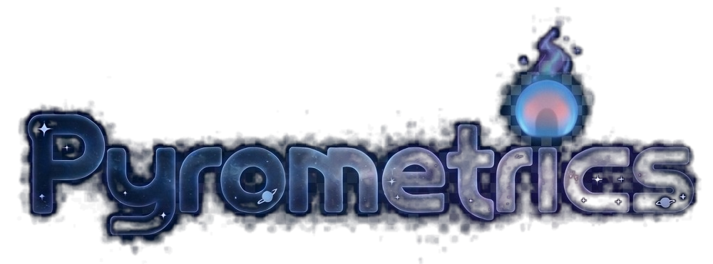

PYROMETRICS
Decades of NASA fire-in-microgravity experiments in one place: ask, search, compare and explore the data. Every answer shows which document it comes from.
How it works
AI Chat
Ask questions in plain language. The AI searches the loaded NASA documentation and answers only with what it finds, linking to the PDF page. Works without an account.
Open the chatResearch
A table of investigations with search, credits, objective, a hyperlinked document tree and a synopsis.
View the tableCompare Premium
Pick several investigations and the AI generates a summary, an outline, and what they share and where they differ.
CompareSimulator Premium
Compare experimental data with the CFD model, measure the slope of d², write your report or theory, download it and get feedback from other researchers.
Open the simulatorMission
To make NASA's experimental knowledge of combustion in microgravity easy to search, compare and understand, with answers that always show their source.
Vision
To be the go-to tool for students, engineers and researchers making fire-safety decisions in space exploration based on verifiable data.
Create your account and try Compare and Simulator free for 1 month.
Pyrometrics uses public investigations from NASA's PSI repository. It is a reference aid; it does not replace expert judgment or safety certification. Project for NASA Space Apps · Challenge “Flame in free fall”.